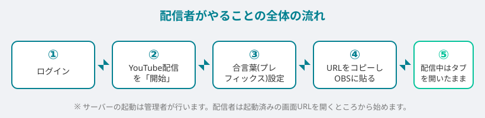
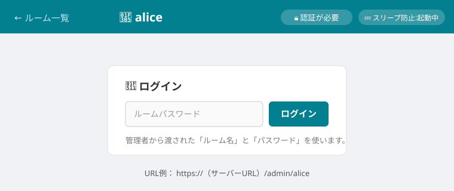
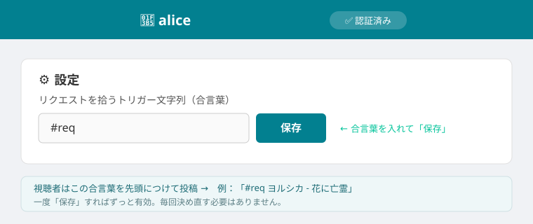
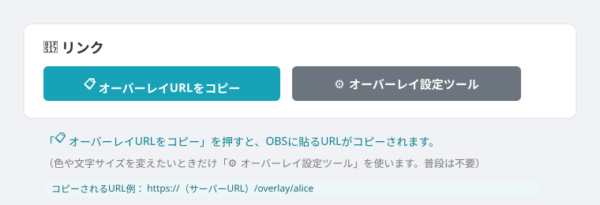
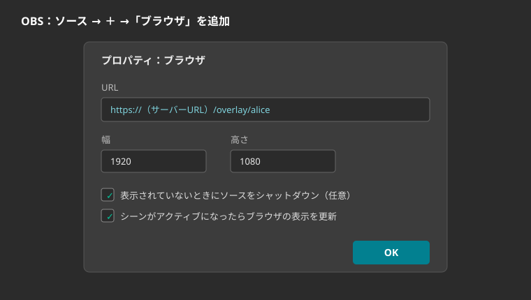
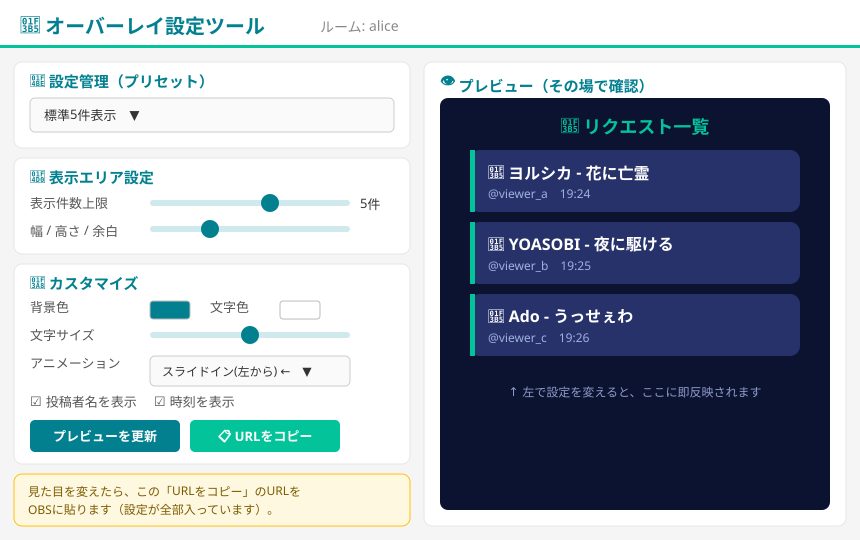
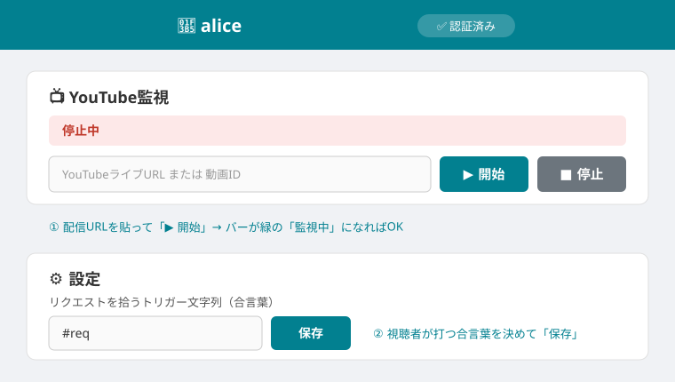
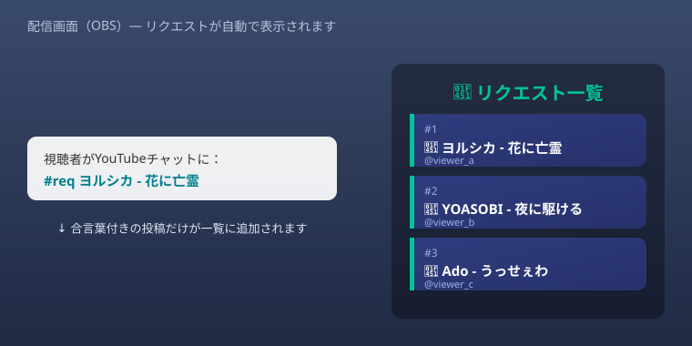

むずかしい設定は管理者が済ませてあります。
🟢 いちばん大事なこと：毎回やるのは「▶ 開始」を押すだけです。
ログインやOBSの設定は最初の1回だけ。次回からはそのまま使い回せます。「全部やり直し」ではありません。
ログインやOBSの設定は最初の1回だけ。次回からはそのまま使い回せます。「全部やり直し」ではありません。
全体の流れ

サーバーの起動は管理者が行います。 あなたは「管理者から渡されたURL」を開くところから始めてください。 もしURLを開いて「サーバーは停止中です」と出る場合は、管理者に起動を依頼してください。
事前に管理者から受け取るもの
| 受け取るもの | 例 |
|---|---|
| あなた専用のページURL | https://（サーバー名）/admin/alice |
| ルームのパスワード | （あなただけの合言葉） |
「alice」の部分があなたのルーム名です（人によって違います）。
🔧 【初回だけ】最初の準備1回やれば、次回から使い回せます。「全部やり直し」ではありません。
A. ログインする（次回から自動）
受け取ったURLをブラウザで開き、パスワードを入れて「ログイン」を押します。

- 右上が「✅ 認証済み」になればOK。
- 同じ端末・同じブラウザなら、次回からは自動でログイン状態になります。
- ページはブックマークしておくと便利です。
B. 合言葉（プレフィックス）を決める
「⚙ 設定」で、視聴者がリクエストに先頭につける合言葉を決めて「保存」します。

- 例：合言葉を
#reqにすると、視聴者は#req ヨルシカ - 花に亡霊のようにコメントすればリクエストになります。 - 合言葉が付いていないコメントは無視されます（普通の雑談はリクエストになりません）。
- 一度保存すれば設定は残ります。 毎回決め直す必要はありません。
C. OBSに表示を一度だけ登録する
C-1. 表示用URLをコピー ―「🔗 リンク」の「📋 オーバーレイURLをコピー」を押します。

C-2. OBSにブラウザソースとして追加 ― OBSで「ソース」→「＋」→「ブラウザ」を選び、コピーしたURLを貼り付けます。

| 項目 | 設定 |
|---|---|
| URL | C-1でコピーしたURL（見た目を変えた人は下の「任意」でコピーしたURL） |
| 幅 | 1920 |
| 高さ | 1080 |
一度OBSに登録すれば、その設定はOBSに保存されます。 次回の配信で貼り直す必要はありません。
（任意）見た目を変えたいとき — オーバーレイ設定ツール
色・文字サイズ・表示件数・出現アニメーションなどを自分好みにしたいときだけ使います。変えなくても使えます。

- 左：設定パネル ／ 右：プレビュー。左を変えると右にすぐ反映されます。
- 💾 設定管理（プリセット）：『コンパクト2件表示』『標準5件表示』などを選ぶだけでも整います。
- 📐 表示エリア設定：表示件数の上限、幅・高さ・余白。
- 🎨 カスタマイズ：色・透明度、文字サイズ、出現アニメーション、投稿者名／時刻の表示ON/OFF。
決めたら「📋 URLをコピー」を押し、そのURLを C-2 でOBSに貼ります。
⚠️ 見た目をカスタムしたときは、C-1の「📋 オーバーレイURLをコピー」ではなく、設定ツールの「📋 URLをコピー」のURLをOBSに使ってください。
💡「現在の設定を保存」で名前を付けて保存でき、次回呼び出せます（このブラウザに保存・全ルーム共通）。配信に重ねるなら「全体背景の透明度」は 0 が基本です。
🔁 【毎回】配信のたびにやること準備が済んでいれば、毎回やるのはこれだけ。
1. 管理ページを開いて「▶ 開始」を押す
ページを開き（自動ログイン）、「📺 YouTube監視」にその日の配信のYouTubeライブURLを貼って「▶ 開始」。

- バーが赤い「停止中」から緑の「監視中」に変わればOK。
- 配信が始まっていない（待機中の）URLでは開始できないことがあります。配信を始めてから押してください。
- 合言葉（初回Bで設定）は保存済みなので、触らなくてOKです。
2. 配信中は、管理ページを開いたままにする
ここでいう「管理ページ」は、YouTubeのURLを貼ったり、曲（リクエスト）を管理するこの画面（/admin/<ルーム名>）のことです。
この管理ページを閉じないでください。 開いている間、自動でサーバーのスリープを防ぎます（右上に「💤 スリープ防止: 起動中」と表示）。
📱 スマホ・タブレットで使えますか？ → 使えます
- 管理ページはスマホ・タブレットに対応しています（ホーム画面に追加してアプリのように開けます）。配信用PCとは別に、手元のスマホで曲を管理する使い方でOKです。
- ただしスマホの画面を消す（ロックする）と、スリープ防止の通信が一時的に止まることがあります（スマホはバックグラウンドのタブを節電のため停止するため）。
- 配信中は、配信用PCのOBSがオーバーレイを毎秒読み込むので、それ自体がスリープ防止になります。 つまり配信中はスマホの画面を消しても基本的に大丈夫です。
- 配信を始める前（まだOBSを表示していないとき）に長く待たせる場合は、スマホの画面を点けたままにするか、自動ロックを長めに設定してください。
これで、視聴者が「合言葉＋曲名」を打つと配信画面に自動で表示されます。

- 一覧は古い順（待ち行列）に並びます。新しいリクエストが来ても、表示中のものが消えることはありません。
- 歌い終わった曲は管理ページで「✕（削除）」→ 次の曲が繰り上がります。「🗑 全クリア」でまとめて消去も可能。
- ↩ 削除を取り消す：誤って消してしまっても、このボタンで直近の削除を1件ずつ戻せます。
- 🕘 この配信の履歴：その配信で受け取った全リクエスト（削除済みも含む）を一覧でき、「復元」で表示に戻せます。
- メモ：各リクエストの入力欄に自分用のメモ（キー・順番など）を書けます。配信画面（オーバーレイ）には表示されません。
3. 配信が終わったら（任意）
- 特に操作は不要です。閉じてOK。
- きちんと止めたい場合は管理ページで「■ 停止」。
- 次回の配信では、また 1. の「開始」を押すだけです。
困ったとき
| 症状 | 対処 |
|---|---|
| ページを開くと「サーバーは停止中」 | 管理者にサーバーの起動を依頼してください。 |
| リクエストが一覧に出ない | ①「監視中」になっているか ②視聴者の合言葉が設定と一致しているか を確認。 |
| 配信画面の表示が古い／反映されない | OBSでソースを右クリック →「現在のページのキャッシュを更新」。 |
| 配信中に急に止まった気がする | ページの「📋 サーバーログ」を開いて「🔄 ログを更新」。わからなければ画面のログを管理者に共有してください。 |
それでも解決しないときは、管理者に連絡してください。